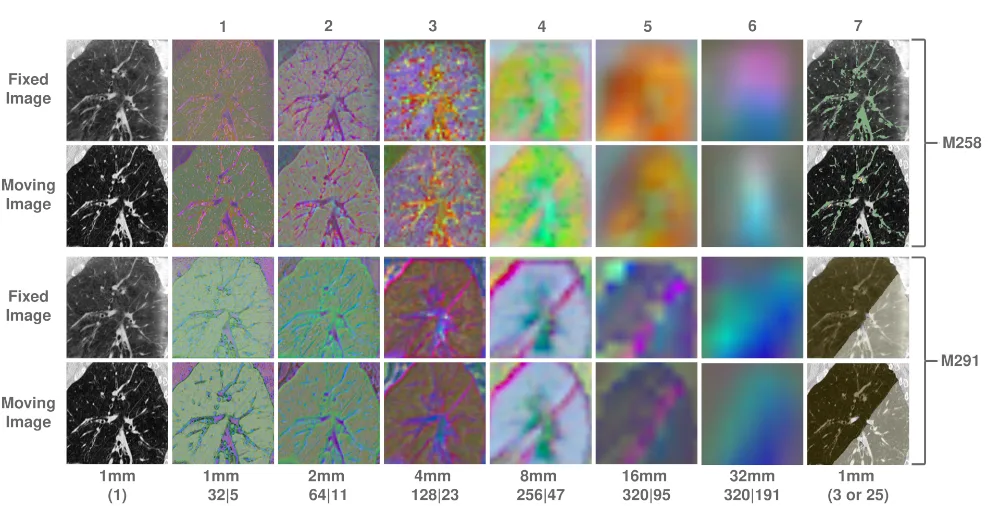
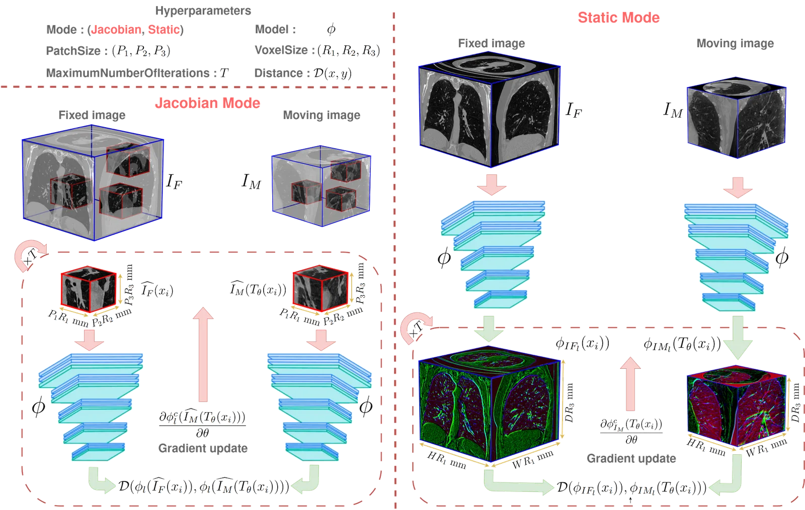
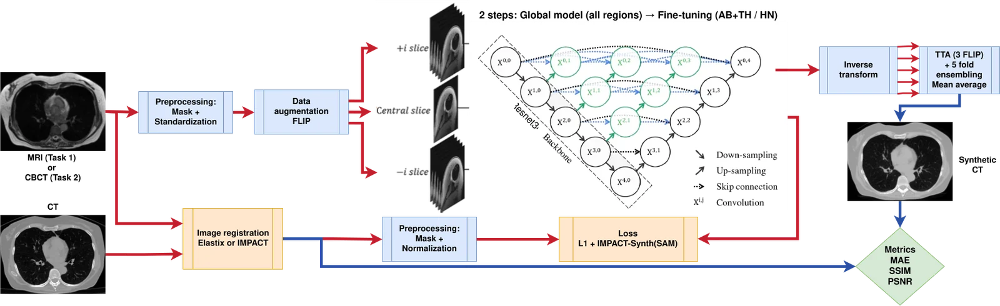
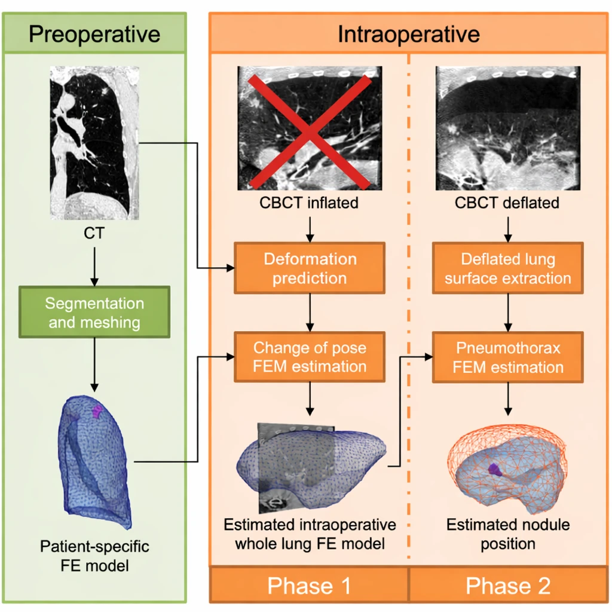
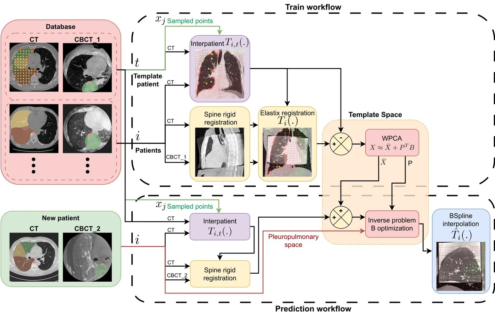
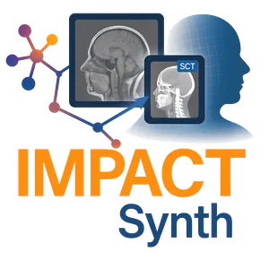
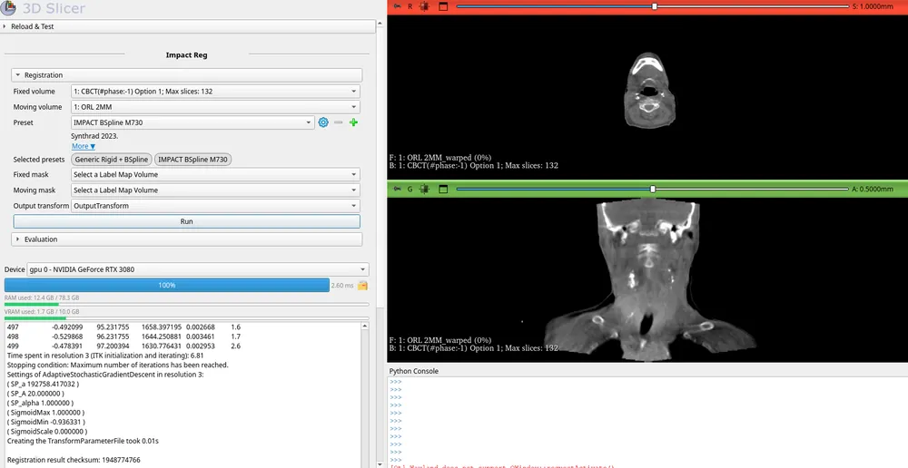
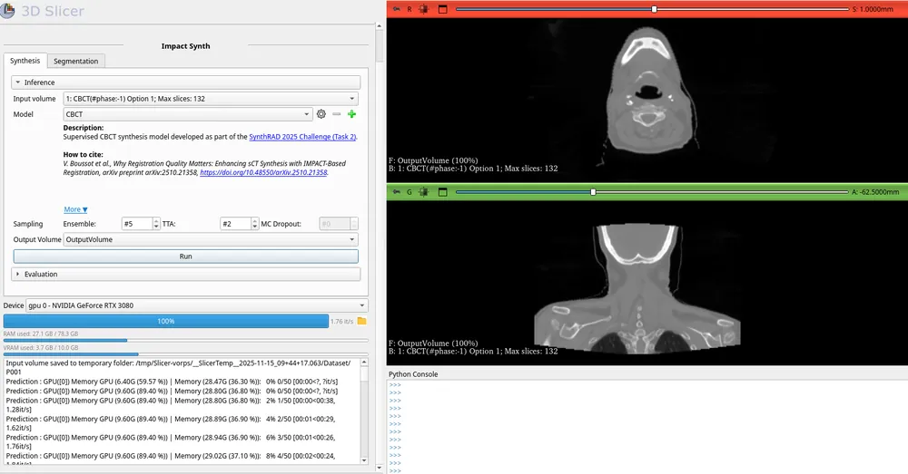
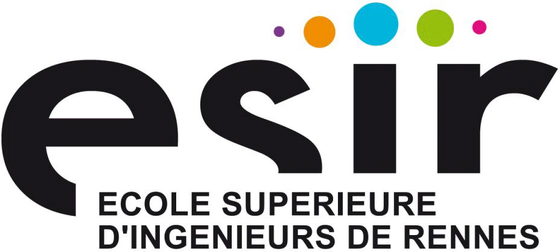

Medical image analysis
Valentin Boussot
Researcher & software engineer in medical image analysis: multimodal registration, domain adaptation, and anatomical-representation learning.
Builds the IMPACT ecosystem and the KonfAI framework. PhD from Université de Rennes, LTSI (UMR INSERM 1099), advised by Jean-Louis Dillenseger; now a Research Software Engineer at Fideus Labs.
- Multimodal registration
- Semantic similarity
- Domain adaptation
- Deep learning
- 3D Slicer
- ITK / Elastix
- Statistical shape & motion models
- 1st place Learn2Reg · Lung CT
- 2nd place Learn2Reg · Abdomen MR–CT
- 2nd place PANTHER · Task 2
- 3rd place SynthRAD 2025 · Tasks 1 & 2
Selected placements in international medical-imaging challenges.
Profile
About
I'm a researcher and software engineer in medical image analysis, working on multimodal image registration, domain adaptation, and anatomical-representation learning.
I carried out my doctorate at the LTSI, Laboratoire Traitement du Signal et de l'Image (UMR INSERM 1099), Université de Rennes, under the supervision of Professor Jean-Louis Dillenseger.
Much of this work is collaborative, supervised by Professor Jean-Louis Dillenseger and carried out closely with Cédric Hémon, co-author on most of these works.
I'm now a Research Software Engineer at Fideus Labs, where I continue to build open, reproducible tools for medical imaging.
Doctoral research
Research
Anatomical Representations for Robust Multimodal Medical Image Analysis in Deformable Settings Application to Image-Guided Thoracic Surgery
The idea
The same anatomy looks completely different across modality, contrast, noise and artifacts, so comparing scans by raw intensity breaks down. The thesis reasons about anatomy in the feature space of pretrained segmentation networks instead. There the structures line up whatever the image looked like, comparing what the tissue is, not how bright it appears.
From that one idea follow two methods (a registration metric and a synthesis loss, packaged as the reusable IMPACT ecosystem below) and one uncomfortable finding about how synthesis is evaluated. The work grew out of image-guided lung surgery (carrying a nodule from a pre-operative CT onto a deformed intra-operative CBCT), but the validation reached far beyond that setting, across modalities, anatomical regions and public challenges.
See the shared anatomical space

The contributions
IMPACT-Reg and IMPACT-Synth are the two sides of the feature-space idea above. A third, a statistical deformation model, predicts the lung's change of pose directly.
-
Multimodal registration · IMPACT-Reg
A modality-agnostic semantic similarity metric built from pretrained segmentation features, where intensity-based measures break down across modalities. The registration engine is unchanged (only the similarity metric changes), so it plugs into both algorithmic (Elastix) and learning-based registration.
What problem does this solve?
Problem
Aligning two scans of the same anatomy across modalities is hard: their intensities don't correspond, so the intensity-based measures classic registration relies on break down.
Key idea
Compare images in the feature space of pretrained segmentation networks, not raw voxels. A simple L1/L2 distance there becomes a modality-agnostic similarity measure.
Two modes
In Elastix it runs in a Jacobian mode (features recomputed each iteration for the most faithful gradient) or a lighter Static mode using precomputed features. The best backbone and layer depend on the anatomy and modality: no universal recipe.
Result
1.20 mm median TRE on CT/CBCT, ranked 1st on Learn2Reg Lung CT and 2nd on Abdomen MR–CT, and merged into the official Elastix toolkit. It ships in the IMPACT ecosystem (below) as IMPACT-Reg.

The IMPACT-Reg principle. Fixed and moving images are compared in the feature space of a pretrained segmentation network: Jacobian mode recomputes features each iteration for the most faithful gradient, Static mode precomputes them for speed. -
Anatomy-preserving CT synthesis · IMPACT-Synth
Cross-modality CT-like synthesis as domain adaptation under an anatomy-preservation constraint: a content / style split that makes CBCT and MRI usable by CT-trained tools without displacing, erasing or inventing patient anatomy.
What problem does this solve?
Problem
Many imaging tools are trained only on CT, so CBCT and MRI can't use them. Making those scans CT-like fixes that, but naive translation can hallucinate or displace anatomy.
Key idea
Separate content from style: hold the anatomy to the source image, move only the appearance toward CT. Anatomy is compared in the same SAM / TotalSegmentator feature space, so the constraint is anatomical, not voxel-wise.
Why it matters
Relaxing the rigid voxel-to-voxel target is what cuts the geometric bias that, as the next section shows, supervised synthesis otherwise inherits. A SAM perceptual loss (matching structures in a Segment Anything feature space, not intensities) is complementary: it reduces the blur of voxel-wise regression and improves downstream segmentation, but, still trained on the registered pairs, it does not remove the systematic bias on its own.
Result
On VATSop, CBCT→CT-like MAE fell from 227.6 to 129.7 HU and lobe-segmentation Dice rose from 0.898 to 0.930. Its public form placed 3rd at SynthRAD 2025 (Tasks 1 & 2), and ships in the IMPACT ecosystem (below) as IMPACT-Synth.

The synthesis pipeline. A 2.5D UNet++ generator maps the source MR/CBCT to a synthetic CT, supervised by an L1 + IMPACT-Synth (SAM) loss. -
Statistical deformation model · wPCA
A weighted-PCA prior over lung deformation, learned across the cohort and recovered for a new patient as a latent inverse problem from the pleural surface alone, predicting the change of pose so one intra-operative CBCT can be dropped.
What problem does this solve?
Problem
The reference pipeline needs a second, intra-operative CBCT just to recover how the lung shifts when the patient is repositioned, before it is deflated: extra dose, time and complexity.

The need. Locating the nodule normally takes a second, inflated-lung CBCT just to capture the change of pose (crossed out). Predicting that deformation removes the scan; only the deflated-lung CBCT remains. Key idea
Learn a compact deformation prior across the cohort. Every patient is registered into a common template space, where a weighted PCA captures the plausible pose changes as a mean field plus a few dominant modes.
Recovery
For a new patient, recover those modes' coefficients as a latent inverse problem from the pleural surface alone, then reconstruct the dense, patient-specific field by B-spline interpolation.
Result
Median localisation error drops from 11.96 to 6.33 mm (about 47% over a rigid baseline), removing one intra-operative CBCT. It has no public release, so there is no repository link.

Train and predict. The cohort builds a compact deformation prior in a common template space (weighted PCA); for a new patient, an inverse problem on its coefficients reconstructs the full deformation field.
An instance of Goodhart's law
The reference is not the ground truth
Supervised CT synthesis learns to reproduce a target CT, but that target was itself registered onto the source, so the registration becomes part of the supervision, residual error and all.
That residual is not random noise but structured geometric label noise: the network blurs the boundaries it cannot place consistently, and adopts whichever geometry the registration prefers. The looser the alignment, the more it inflates predictive uncertainty and weakens out-of-distribution robustness.
The clinching point is a performance floor: a real CT, registered the same way, still carries a non-zero error, and the best supervised models already score below it, fitting the registration convention's geometry rather than the patient's anatomy. Swap only the evaluation reference and the leaderboard reorders.
The reference is a convention, not the patient's anatomy: Goodhart's law, where a measure that becomes a target stops being a good measure.
Why doesn't a better score mean a better synthesis?
Why the metric is fooled
A misalignment is cheap on a voxel metric wherever the image is flat: the error a small displacement produces scales with the local image gradient, so it concentrates at high-contrast interfaces (air, bone, teeth) and stays nearly invisible elsewhere. The same geometric error can therefore swing MAE widely from one anatomical region to another.
The floor, measured
Build the targets two ways (a classic Elastix/MI alignment versus IMPACT-Reg) and the best MAE always lands on the matching evaluation convention. Push it further: registration alone, with no synthesis at all, already produces voxel error in the same range as the best supervised models, a performance floor baked into the benchmark.
Anatomy tells the truth
Those registration-only controls keep real CT structure and score far higher on anatomical (Dice) fidelity. So when a supervised model dips below the floor on MAE, it is winning by smoothing edges and adapting to the evaluation geometry, not by recovering the patient's anatomy.
How to evaluate
Past the floor, voxel gains measure conformity to the reference, not anatomical accuracy, so rankings need anatomy-oriented and downstream-task checks beside the voxel score. A SAM perceptual loss (computed in a pretrained Segment Anything feature space) cuts oversmoothing and lifts downstream segmentation over MAE-only and VGG objectives, but it cannot remove the systematic bias on its own; only relaxing the voxel-to-voxel target (IMPACT-Synth's content/style) reduces the dependence on a perfectly aligned reference.
Results
At scale and in open competition: each method above was entered into public, independently-judged challenges across modalities and anatomical regions.
- 1st placeLearn2Reg · Lung CT
- 2nd placeLearn2Reg · Abdomen MR–CT
- 6th placeLearn2Reg · Thorax CBCT
- 3rd placeSynthRAD 2025 · Tasks 1 & 2
- 2nd placePANTHER · Task 2
- 3rd placeCURVAS
- 3rd placeCURVAS-PDACVI
- 6th placeTrackRAD
- 10th placeSynthRAD 2023 · Task 2
Software
The IMPACT ecosystem
The methods above, shipped as open software: reusable libraries for registration and synthesis, the pretrained backbones behind them, and the integrations that drop them into standard toolkits.
-
Registration metric
IMPACT-Reg
A modality-agnostic similarity metric, shipped as the reusable ImpactLoss library, that drops into a standard registration pipeline.
ImpactLoss repository (opens in a new tab) -

CT synthesis
IMPACT-Synth
Open training code and models for cross-modality CT synthesis, released in the public, reproducible form that placed 3rd at SynthRAD 2025.
Synthrad2025_Task_1 repository (opens in a new tab)
Also ships
ImpactElastix repository (opens in a new tab)
 impact-torchscript-models on Hugging Face (opens in a new tab)
impact-torchscript-models on Hugging Face (opens in a new tab)
 PyTorch
PyTorch 3D Slicer
3D Slicer- SAM
- TotalSegmentator
 Hugging Face
Hugging Face
Open-source framework
KonfAI
KonfAI is a modular, YAML-driven PyTorch framework for medical imaging: it defines complete training, inference and evaluation pipelines through configuration, not orchestration scripts. The same framework powers the IMPACT methods above and the ranked challenge solutions below.
- YAML-driven pipelines
- Patch-based learning
- Test-time augmentation
- Model ensembling
- Uncertainty estimation
- Deep supervision
- Multi-model / GAN
- Reproducible by config
Agent-ready: KonfAI-MCP
A deterministic backend for LLM-driven experimentation. Through the KonfAI-MCP server, agents inspect datasets, generate and refine configurations, launch experiments and analyse results, with every run reproducible and grounded in YAML.
KonfAI Apps
Stable workflows packaged as self-contained KonfAI Apps (inference, evaluation, uncertainty, fine-tuning), usable from the CLI, the Python API, a remote server, or directly in 3D Slicer.
In the clinic
Running in 3D Slicer
The methods reach the clinic as open extensions for 3D Slicer, the free, widely used platform for medical-image computing. A clinician or researcher loads their own scans and runs each one interactively, with quality assessment built in. The screenshots below are the actual extensions in use.
-

SlicerImpactReg · multimodal CT/CBCT registration -

SlicerImpactSynth · CBCT→CT-like synthesis, running the reusable TotalSynth whole-body sCT models
Five open extensions cover registration, synthesis, segmentation, the KonfAI apps, and dose accumulation:
Open source
Projects
Open, reproducible tools and challenge solutions: the KonfAI framework, the IMPACT methods, their Elastix and 3D Slicer integrations, ranked public-challenge entries, and pretrained models and datasets on Hugging Face. Each card links to its GitHub repository or Hugging Face page.
Selected works
Publications
Lead-author flagship works alongside peer-reviewed challenge reports and collaborations. Items still in peer review are marked under review.
This is a selection. For the complete, up-to-date list see Google Scholar (opens in a new tab).
Teaching & mobility
Experience
-

Teaching Assistant
Dec 2023 – May 2025ESIR · Rennes, France
Taught discrete mathematics, machine learning and system modelling to engineering students; led tutorial and practical sessions.
-

Visiting PhD Student
Apr – Oct 2023CSIRO · Brisbane, Australia
Six-month research mobility on medical image analysis.
-
Teaching Assistant
Nov 2021 – Mar 2023IUT de Rennes · Rennes, France
Taught C and LabVIEW programming and electronics to undergraduate students; led practical sessions.
Get in touch
Contact
Interested in multimodal registration, domain adaptation, or the IMPACT and KonfAI tools? I'm always happy to discuss research, collaborations and open-source contributions. The quickest way to reach me is by email.